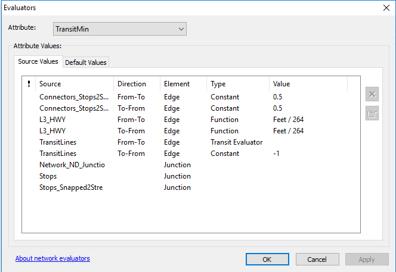

Network Review Results
Network Dataset Configuration
The multi-modal network is composed of five features classes:
“TransitLines” represents vehicle trips between transit stops;
“Stops” represents transit stops served by transit vehicles;
“L3_HWY” represents the local street network for access to/egress from transit stops;
“Stops_Snapped2Street” represents each transit stop as a location “snapped” to the “Streets_UseThisOne” features;
“Connectors_Stops2Street” represents the connections from the L3_HWY features to the transit Stop locations via the Stops_Snapped2Street junctions.
These features are grouped into three “connectivity groups” that enforce appropriate routing for transit network problems. Modeled paths must begin on the streets (“Streets_UseThisOne”) network (column 1) and can proceed to the transit lines (column 3) via the Connectors_Stops2Streets features (column 2). The network edge features are connected through the Stops (column 2-column 3) and the Stops_Snapped2Streets (column 1-column 2) node features. Figure 6 below shows the connectivity topological rules applied to the development of the build scenario multimodal network.
Travel times between zones are computed using a travel time evaluator, setup for the build scenario multimodal network in Network Analyst as shown in Figure 7. A 3 mph (264 feet per minute) walk speed is assumed and the transit evaluator computes time-of-departure-specific transit travel times using the GTFS schedule.
Figure 6. Coding Assumptions 
Figure 7. Network Minutes Evaluators 
Connectivity Tests
There are several steps required to create a multi-modal network, presenting opportunities for user error or technical anomalies to mis-represent network connectivity. To test the connectivity and usability of the proposed servcie in the network, two quality control tests were performed: Service area analysis and routing analysis. These tests are described below. All test cases are based on an assumed peak morning service on a typical Wednesday.
Service Area Test
Figures 8 and 9 show the result of the service area analysis. The maps visualize travel time isochrones for a single location within the project study area for the base network and the build network with the proposed fixed route bus service. Service is tested from The Universities at Shady Grove.
A comparison between the service areas shows a measurable increase of service relative to the location used in the test, when the new service is introduced. These changes confirm that Project XX-XX is appropriately integrated into the base multimodal network.
Figure 8. Base Service Area

Figure 9. Build Service Area

Route Test
Figures 10 compares two shortest path routing tests, one for each route. Tests are conducted between southbound, from the Shady Grove Metro Station to The Universities at Shady Grove. The tests confirms the network is utilizing the new path the service creates.
In the no-build Lime network, the shortest path between Shady Grove Metro Station to The Universities at Shady Grove was similar to the alignment used by the Pink route. In the build network, the shortest path uses the new alignment of I-370 and Fields Road. The build network provides shorter transit route by using higher speed facilities. The shortest path for the Pink route changes only slightly but can best be seen where the route now crosses Montgomery Ave on Omega Drive instead of making a right hand turn. While this build route is slightly longer than the build route it does add an additional stop on Omega Drive.
The test also shows a slight travel time reduction after the addition of Project XX-XX for the Lime route. The test no-build route takes approximately 25 minutes to traverse, while the build route takes 24 minutes. The Pink Route takes approximately 5 minutes longer to traverse, but the addition of a new stop does require the use of slower speed facilities and taking a more circuitous route.
Figure 10. Route test comparison

Figure 11. Route test travel time: build vs. no-build

Table 5. Route test travel time: build vs. no-build
| Test Route Direction | Scenario | Travel Time (min.) |
|---|---|---|
| Lime | Base Route | 24.70 |
| Pink | Base Route | 20.32 |
| Lime | Build Route | 24.27 |
| Pink | Build Route | 25.45 |